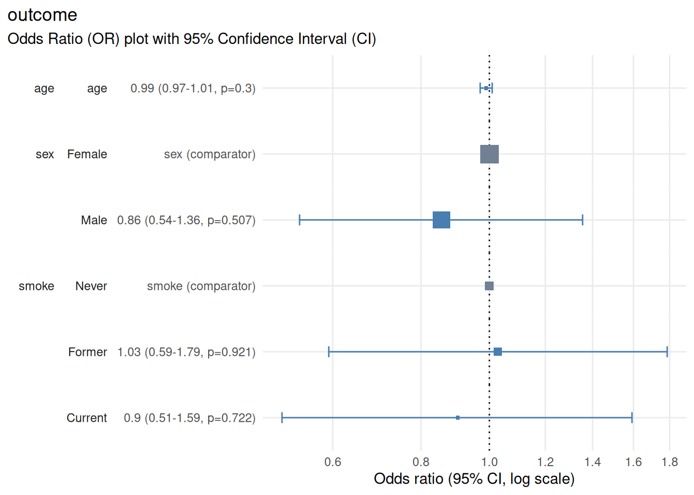

Overview
plot_or() creates publication-ready forest plots from logistic regression models fitted with stats::glm(family = "binomial"). It visualises odds ratios with confidence intervals, making it easy to communicate effect sizes, precision and statistical significance at a glance.
When to use this function
Use plot_or() when you need to:
Visualise effect sizes from logistic regression models
Compare odds ratios across predictors in a single plot
Communicate precision of estimates (via confidence interval width)
Highlight statistical significance visually
Create publication-ready figures for manuscripts or reports
Compare results across multiple models (side-by-side or stacked)
Note: plot_or() works only with glm(family = "binomial"). It does not support logistic regression via other packages (e.g., glm2, logistf) or ordinal / multinomial logistic regression.
Quick example - minimal workflow
# create a small example dataset
rows <- 400
df <- data.frame(
outcome = rbinom(n = rows, size = 1, prob = 0.25) |>
factor(labels = c("Healthy", "Disease")),
age = rnorm(n = rows, mean = 50, sd = 12),
sex = sample(x = 0:1, size = rows, replace = TRUE) |>
factor(labels = c("Female", "Male")),
smoke = sample(x = 0:2, size = rows, replace = TRUE) |>
factor(labels = c("Never", "Former", "Current"))
)
# fit a logistic regression model
m <- glm(
formula = outcome ~ age + sex + smoke,
family = "binomial",
data = df
)
# create the forest plot
plot_or(m)
Output
The resulting plot displays:
Horizontal axis: odds ratio on a log scale
Vertical axis: model predictors and factor levels along with details of point estimates, confidence interval and p-value
Points: odds ratio point estimates shown as boxes, which scale in proportion to the number of rows starting the regression
Horizontal lines: 95% confidence intervals (can be configured by setting parameter
conf_level)Vertical reference line: OR = 1.0 (null effect)
Colour coding: Ssignificant (CI does not cross 1.0) vs non-significant (CI crosses 1.0) vs reference level (factor predictors)
Interpreting effect sizes
0.5 - 0.9: Decreased odds (protective effect); moderate to small
0.9 - 1.0: Decreased odds (protective effect); very small
1.0: No effect (null)
1.0 - 1.1: Increased odds; very small
1.1 - 2.0: Increased odds (risk factor); small to moderate
2.0+: Increased odds (risk factor); large
Interpreting confidence intervals
# ensure reproducibility
set.seed(123)
# create a small example dataset
rows <- 400
df <- data.frame(
narrow_interval = rnorm(n = rows, sd = 10),
wide_interval = rnorm(n = rows, sd = 1),
interval_crosses_1 = rnorm(n = rows, sd = 3),
interval_doesnt_cross_1 = rnorm(n = rows, sd = 3)
)
# create outcome based on predictors to achieve desired associations:
# narrow_interval: strong association (narrow CI)
# wide_interval: weak association (wide CI)
# interval_crosses_1: very weak association (CI crosses 1)
# interval_doesnt_cross_1: moderate association (CI doesn't cross 1)
df$outcome <-
rbinom(
n = rows,
size = 1,
prob = plogis(
0 + # intercept
2 * scale(df$narrow_interval)[, 1] +
0.1 * scale(df$wide_interval)[, 1] +
0.01 * scale(df$interval_crosses_1)[, 1] +
-0.3 * scale(df$interval_doesnt_cross_1)[, 1]
)
) |> factor(labels = c("Healthy", "Disease"))
# fit a logistic regression model
m <- glm(
formula = outcome ~ narrow_interval + wide_interval +
interval_crosses_1 + interval_doesnt_cross_1,
family = "binomial",
data = df
)
# create the forest plot (skip checks on logistic regression assumptions)
plotor::plot_or(m, assumption_checks = FALSE)
Narrow interval: precise estimate (large sample or strong signal)
Wide interval: imprecise estimate (small sample or weak signal)
Interval crosses 1.0: not statistically significant
Interval does not cross 1.0: statistically significant
Exporting plots
Use the ggplot2::ggsave() function to export your forest plot to a file for further use.
Save as PNG (raster)
Use PNG for:
Online documents, websites, presentations
When file size matters
Quick sharing
Save as PDF (vector)
Use PDF for:
Manuscripts and publications (scalable without quality loss)
Professional reports
When you need to edit the figure later
Tips for publication-ready plots
Choose appropriate dimensions
Typical forest plot: 10 cm wide x 6-8 cm tall (4 x 2.4-3.2 inches)
Many predictors: 10 cm x 12-15 cm (4 x 4.7-5.9 inches)
Single predictor: 8 cm x 4 cm (3.1 x 1.6 inches)
Adjust width and height in ggsave() accordingly.
Label predictors clearly
Ensure predictor and factor level names are:
Descriptive (e.g., “Age (per 10-year increase)” instead of “age”)
Consistent with your table labels (see
vignette("table_or"))Free of abbreviations or jargon unfamililar to your audience
Notes and limitations
Categorical reference levels: the first level of each factor is used as the reference (OR = 1.0). To change the reference, reorder factor levels before fitting the model.
Numeric variable scaling: for numeric predictors, the OR represents change per one-unit increase. Consider scaling (e.g., age in decades) for more interpretable ORs.
-
Many predictors: if your model has many predictors, the plot may become crowded. Consider:
Creating separate plots for subsets of predictors
Increasing figure height
Confidence interval interpretation: a confidence interval represents the range of values that would be consistent with your observed data if you repeated the study many times under identical conditions. It does not represent the probability that the true OR falls within this range.
Conclusion
plot_or() transforms logistic regression results into intuitive, publication-ready forecast plots. By visualising odds ratios, confidence intervals and statistical significance together, it helps readers quickly grasp effect sizes and precision - making it an essential tool for communicating statistical findings effectively.
See also
vignette("table_or")- formatting results tables and exporting with {gt}vignette("check_or")- diagnostics and model validationggplot2::ggplot()- ggplot2 documentation for further cusomisationggplot2::ggsave()- saving and exporting plots